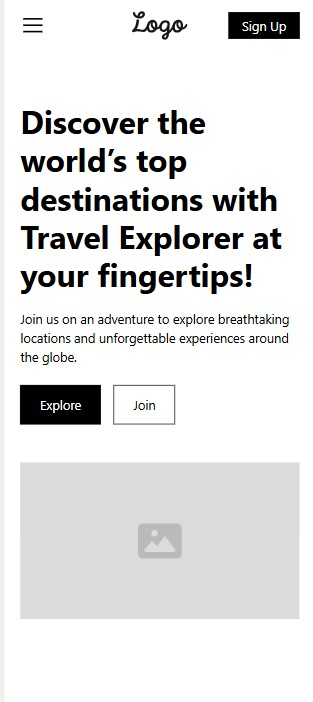
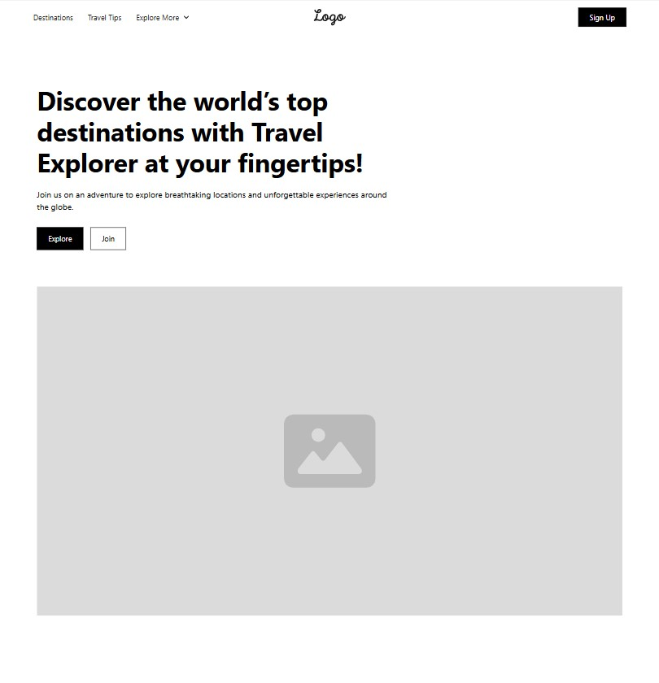
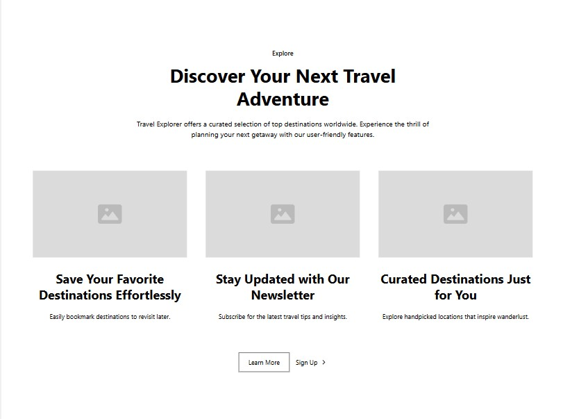
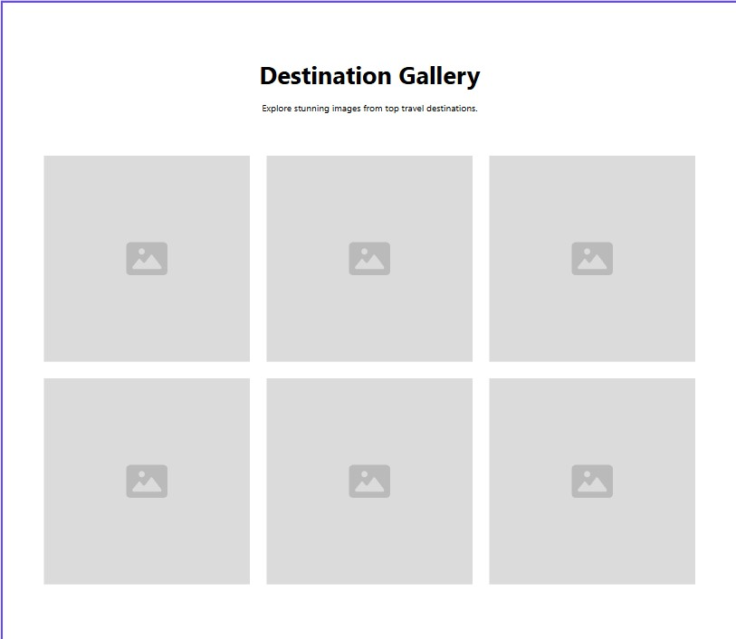
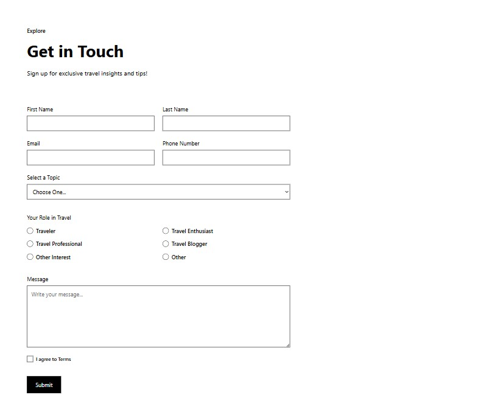

Travel Explorer
This name was chosen because it accurately represents the purpose of the website: to explore and discover top tourist destinations worldwide. It's catchy, easy to remember, and conveys a sense of adventure and discovery.
Travel Explorer is an interactive travel guide that showcases top tourist destinations around the world. The site aims to inspire travelers, provide valuable information about various locations, and allow users to save their favorite destinations for future reference. Key features include:
The quick brown fox jumps over the lazy dog.
The quick brown fox jumps over the lazy dog.




